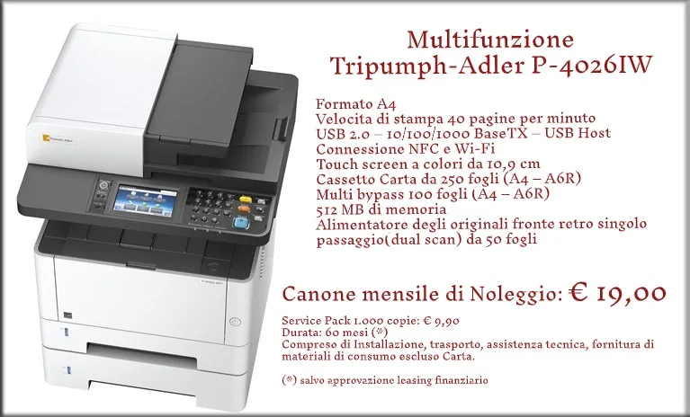
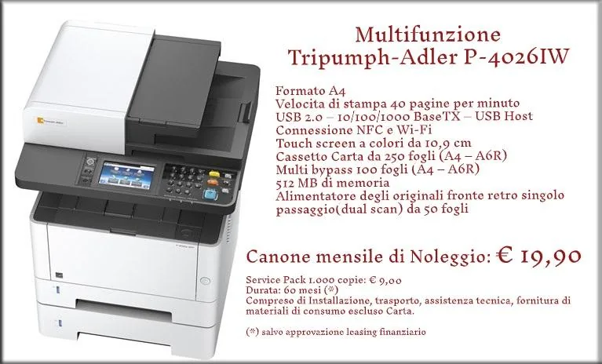
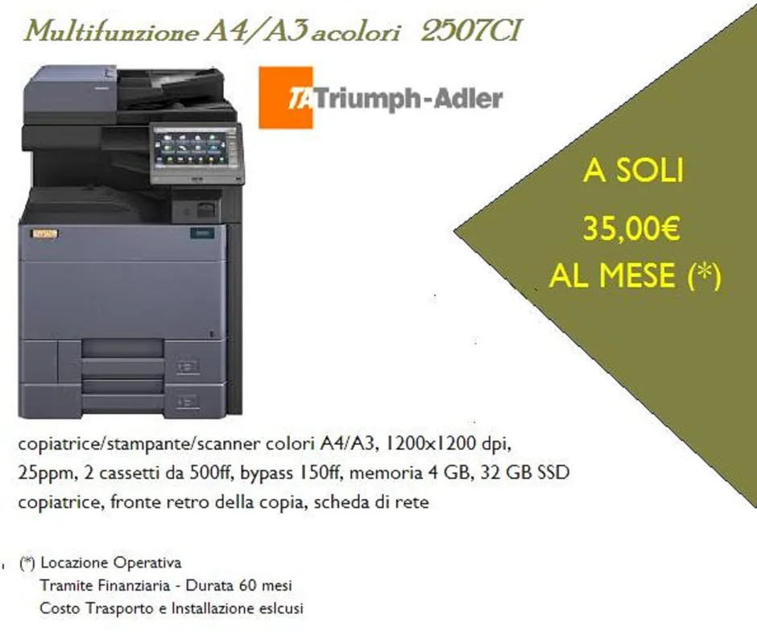
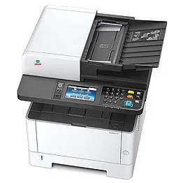

DUEMME · SOLUZIONI PER L'UFFICIO
Stampanti e multifunzione
Soluzioni di stampa per uffici, aziende, scuole ed enti pubblici.
Il servizio
Soluzioni per le tue esigenze
Vendita, fornitura e noleggio di sistemi multifunzione per stampa, copia e scansione, con soluzioni adatte alle esigenze operative di ogni ambiente di lavoro.
✓ Multifunzione per uffici e organizzazioni
✓ Formule di vendita e noleggio
✓ Sistemi di stampa, copia e scansione
✓ Informazioni su materiali di consumo e assistenza tecnica
Richiedi informazioni
Contattaci per approfondire disponibilità, soluzioni e modalità di fornitura o assistenza.
Vai ai contatti →Catalogo Multifunzioni e stampanti
Una selezione di prodotti presente nell’archivio storico. Contattaci per verificare modelli attualmente disponibili, caratteristiche, compatibilità e condizioni di fornitura.



Immagini di archivio a scopo illustrativo. La presenza in catalogo non garantisce la disponibilità commerciale attuale.